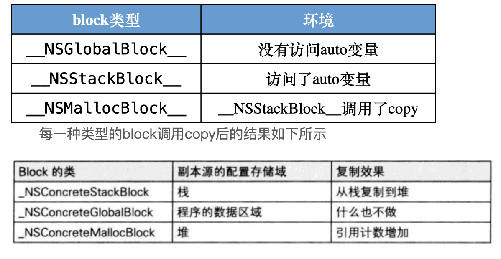
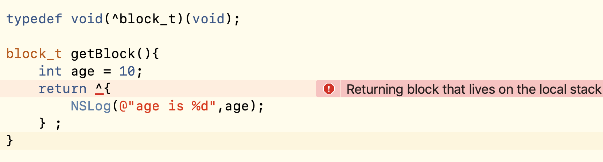
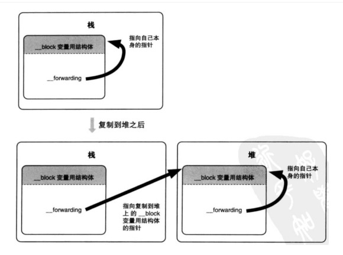

Block的本质
还是使用重写为C语言的方法，来探索底层实现。
源代码:
int main(int argc, char * argv[]) {
int age = 18;
void (^ageBlock)(void) = ^{
NSLog(@"年龄是%d岁",age);
};
ageBlock();
}
使用命令:
xcrun -sdk iphoneos clang -arch arm64 -rewrite-objc main.m -o mainarm64.cpp
摘入.cpp文件中的关键代码如下:
int main(int argc, char * argv[]) {
int age = 18;
void (*ageBlock)(void) = (&__main_block_impl_0(
__main_block_func_0,
&__main_block_desc_0_DATA,
age)
);
(ageBlock->FuncPtr)(ageBlock);
}
struct __main_block_impl_0 {
struct __block_impl impl;
struct __main_block_desc_0* Desc;
int age;
__main_block_impl_0(void *fp, struct __main_block_desc_0 *desc, int _age, int flags=0) : age(_age) {
impl.isa = &_NSConcreteStackBlock;
impl.Flags = flags;
impl.FuncPtr = fp;
Desc = desc;
}
};
struct __block_impl {
void *isa;
int Flags;
int Reserved;
void *FuncPtr;
};
static void __main_block_func_0(struct __main_block_impl_0 *__cself) {
int age = __cself->age; // bound by copy
NSLog((NSString *)&__NSConstantStringImpl__var_folders_8c_jf6slqz973v1dxj8z9g8z02w0000gn_T_main_f2862d_mi_0,age);
}
static struct __main_block_desc_0 {
size_t reserved;
size_t Block_size;
} __main_block_desc_0_DATA = { 0, sizeof(struct __main_block_impl_0)};
在main函数看到，ageBlock通过main_block_impl_0的构造函数生成，参数分别为main_block_func_0（block内代码的封装）、__main_block_desc_0_DATA(Block描述信息)及age(被捕获的变量).
当我们调用block时，实质上是调用了封装的函数FuncPtr。
至此，关于Block的本质我们可以得出如下结论：
- Block本质是一个OC对象，内部有isa指针指向类对象。
- Block会封装函数调用，并通过变量捕获封装函数调用的环境。
Block的类型
在上文中我们会看到类似 impl.isa = &_NSConcreteStackBlock; 的代码，Block既然是对象，我们就可以通过 [NSObject class] 或 object_getClass方法查看对应的类。
Block分为 NSGlobalBlock、NSStackBlock、NSMallocBlock3种类型，分别对应的内存地址为data区、栈区和堆区。
Block类型归纳如下: 
在定义block类型属性时，我们往往使用copy关键字来修饰。在此处我们就能理解真正的用意。栈区变量的内存在离开作用域后就会被回收，为了不让block在使用前被回收，就需要将其从栈区拷贝到堆区内存。
例如如下代码:(MRC环境下) 
加了copy后，block才能正常返回。在ARC下，编译器会帮我们自动处理。
typedef void(^block_t)(void);
block_t getBlock(){
int age = 10;
return [^{
NSLog(@"age is %d",age);
} copy];
}
而如果我们block内不访问auto变量age,此时是GlobalBlock，位于data内存区，也是可以正常使用的。
Block的变量捕获
在第一节，我们分析重写后的c代码时，发现main_block_impl_0结构体中有变量age的定义，而且在main_block_impl_0的构造函数中会把外部的age通过值传递的方式给结构体的age赋值。
正因为是值传递的方式，所以我们只能读取使用，不能在block内部修改。
此时我们会想到，只要使用block修饰，就能在block内部修改了。那么就来看下block内部的具体实现。
还是第一章节的代码，加了__block 修饰age,重新重写为c++代码。
int main(int argc, char * argv[]) {
__Block_byref_age_0 age = {0,&age, 0, sizeof(__Block_byref_age_0), 18};
void (*ageBlock)(void) = (&__main_block_impl_0(
__main_block_func_0,
&__main_block_desc_0_DATA,
&age,
570425344));
(ageBlock)->FuncPtr)(ageBlock);
}
struct __main_block_impl_0 {
struct __block_impl impl;
struct __main_block_desc_0* Desc;
__Block_byref_age_0 *age; // by ref
__main_block_impl_0(void *fp, struct __main_block_desc_0 *desc, __Block_byref_age_0 *_age, int flags=0) : age(_age->__forwarding) {
impl.isa = &_NSConcreteStackBlock;
impl.Flags = flags;
impl.FuncPtr = fp;
Desc = desc;
}
};
struct __Block_byref_age_0 {
void *__isa;
__Block_byref_age_0 *__forwarding;
int __flags;
int __size;
int age;
};
在main函数可以看到，使用了block修饰后，age变量变成了Block_byref_age_0对象类型。__Block_byref_age_0结构体内部也有isa指针，是个对象。
在main_block_impl_0的构造函数中，age对象以引用传递的方式传入block中。所以才有了block内部可以修改外部变量的效果。block的设计很好的屏蔽了内部实现细节。
Block的内存管理
在上一节中有一个细节，Block_byref_age_0结构体中有一个指向自己的forwarding指针。main_block_desc_0结构体中也多了copy和dispose两个函数。这些都和block的内存管理有关。具体如下:
static struct __main_block_desc_0 {
size_t reserved;
size_t Block_size;
void (*copy)(struct __main_block_impl_0*, struct __main_block_impl_0*);
void (*dispose)(struct __main_block_impl_0*);
}
struct __Block_byref_age_0 {
void *__isa;
__Block_byref_age_0 *__forwarding;
int __flags;
int __size;
int age;
};
还是以__block int age;为例，
当block在栈上时，并不会对age变量产生强引用。
当block被copy到堆时，会调用内部的copy函数对__block变量产生强引用。
当block从堆中移除时，会调用内部的dispose函数，释放引用的变量。
static void __main_block_func_0(struct __main_block_impl_0 *__cself) {
__Block_byref_age_0 *age = __cself->age; // bound by ref
(age->__forwarding->age)++;
NSLog((NSString *)&__NSConstantStringImpl__var_,(age->__forwarding->age));
}
在源码中，我们看到无论是读取age还是修改age，都是先通过自身的forwarding指针来访问和修改的，这是为什么呢？请看下图。 
当一个block变量从栈上被复制到堆上时，栈上的结构体中的forwarding指针也会指向堆上的结构体。所以通过forwarding修改可以保证修改的都是堆上的结构体，main函数释放的时候，只是释放了栈上的东西。而所有的对局部变量的修改都早已经转移到堆上了。